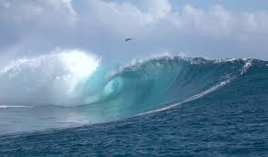

CSS nav is always going to be needed in every single website. An easily navigable website increases the time a visitor or customer remains on your website. This allows visitors more time to explore your website and discover information about it. As you can see at the top, I created one if you click on them it will take you down to more CSS examples.
CSS Background
The background image is mainly use to style the whole back of the page, nobody likes a plain white background so that's why an image is necessary. The purpose of a background-image or just a background in general is to style the page a little better so it that doesnt look like a 1990s blog. You could use background-images, or simply a background color.
CSS Table
CSS tables are mainly use to be more organized and see exactly what you are looking. For example this is a table i created for my main website. It shows three table headings, job descriptions, and salary caps. It will always start with table rows and right under you will either use table headings or table data. When you code it it will be looking like is going down on atom but once you refresh your html site it will look like a perfect table like how it suppose to look like.
Job Title
2011
2012
2013
Engineer (experienced)
91,053
96,339
97,975
Special Engineer
83,911
85,955
87,898
Advanced Engineer
61,960
62,733
65,606
Intermediate Engineer
51,420
51,116
54,010
Novice Engineer
40,079
42,522
44,837
Advanced Developer
34,112
35,237
38,029
Intermediate Developer
26,403
27,628
31,221
Novice Developer
22,918
26,367
28,221
Data Entry
18,921
22,467
23,283
CSS Margin
Margin is really good to set up anything in a specific spot. Even though you could float things right or left, margin will help you center things and even move them whether you want them a bit lower or higher than the content or object near it is. The boxes below me, I put one in the middle, one in the right bottom corner and another on the bottom left corner.
CSS Float
When you float content or image it can either go right left, or inherit. This is a pretty affective element due to the fact that it is a little faster then margin if you just want something hanging out all the way on the right side or on the left side.

CSS3 Gradients
The point of gradients is obvoiusly to give whatever you wish to give a different color scheme. This element will make your website look a lot more cleaner and professional. It is really cool to play with and has many different types of patterns.
CSS3 Shadows
The text shadow element is simply to style letters or boxes. You can make them glow up or just give them a solid shadow going all around the content.
CSS3 Box Sizing
Box-sizing is already being use by developers because it is easier to use because when you set the width/height of an element, the element will always appear bigger than you have set. This is a more accurate way of sizing your boxes.
CSS3 Flexbox
The purpose of flexbox is to have a better layout for your website. This type of element will help your website improve over the block model because it does not use floats and it also does not let the margin container collapse with its content.
Object 1
Object 2
Object 3
Computers have become a major factor in the development and operation of the modern industry. From providing means of communications, to operating machines, to facilitating international commerce, to systems animation, computers and their related software programs makes things possible.
The Computer Software Engineering Technology program prepares students to design, develop, and build customized software programs for specific applications. Specifically, students will learn basic programming, how to interpret specifications, application of software architecture, verification and validation principles, and software performance standards. Students will create software programs which address known specifications. The program emphasizes a practical hands-on education as software projects are required each semester.
Computers have become a major factor in the development and operation of the modern industry. From providing means of communications, to operating machines, to facilitating international commerce, to systems animation, computers and their related software programs makes things possible.
The Computer Software Engineering Technology program prepares students to design, develop, and build customized software programs for specific applications. Specifically, students will learn basic programming, how to interpret specifications, application of software architecture, verification and validation principles, and software performance standards. Students will create software programs which address known specifications. The program emphasizes a practical hands-on education as software projects are required each semester.